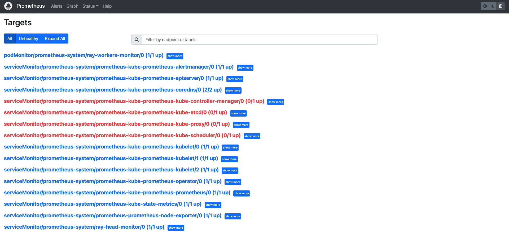

使用 Prometheus 和 Grafana
Contents
使用 Prometheus 和 Grafana#
本节将介绍如何使用 Prometheus 和 Grafana 监控 Kubernetes 中的 Ray 集群。
如果您没有 Kubernetes 上的 Prometheus 和 Grafana 的任何经验，请观看此 YouTube 播放列表。
准备#
克隆 KubeRay 仓库签出 master 分支。
本教程需要存储库中的多个文件。
步骤 1: 使用 Kind 创建 Kubernetes 集群#
kind create cluster
步骤 2: 通过 Helm Chart 安装 Kubernetes Prometheus Stack#
# Path: kuberay/
./install/prometheus/install.sh
# Check the installation
kubectl get all -n prometheus-system
# (part of the output)
# NAME READY UP-TO-DATE AVAILABLE AGE
# deployment.apps/prometheus-grafana 1/1 1 1 46s
# deployment.apps/prometheus-kube-prometheus-operator 1/1 1 1 46s
# deployment.apps/prometheus-kube-state-metrics 1/1 1 1 46s
KubeRay 提供了 install.sh 脚本 来自动在命名空间
prometheus-system中安装 kube-prometheus-stack v48.2.1 chart 和相关的自定义资源，包括 ServiceMonitor、 PodMonitor 和 PrometheusRule。我们对 kube-prometheus-stack 图表中的原始图表
values.yaml进行了一些修改，以允许在 Ray Dashboard 中嵌入 Grafana 面板。有关更多详细信息，请参阅 overrides.yaml。grafana: grafana.ini: security: allow_embedding: true auth.anonymous: enabled: true org_role: Viewer
步骤 3: 安装 KubeRay operator#
按照 文档 通过 Helm 存储库安装最新的稳定 KubeRay Operator。
步骤 4: 安装 RayCluster#
# path: ray-operator/config/samples/
kubectl apply -f ray-cluster.embed-grafana.yaml
# Check ${RAYCLUSTER_HEAD_POD}
kubectl get pod -l ray.io/node-type=head
# Example output:
# NAME READY STATUS RESTARTS AGE
# raycluster-kuberay-head-btwc2 1/1 Running 0 63s
# Wait until all Ray Pods are running and forward the port of the Prometheus metrics endpoint in a new terminal.
kubectl port-forward --address 0.0.0.0 ${RAYCLUSTER_HEAD_POD} 8080:8080
curl localhost:8080
# Example output (Prometheus metrics format):
# # HELP ray_spill_manager_request_total Number of {spill, restore} requests.
# # TYPE ray_spill_manager_request_total gauge
# ray_spill_manager_request_total{Component="raylet",NodeAddress="10.244.0.13",Type="Restored",Version="2.0.0"} 0.0
# Ensure that the port (8080) for the metrics endpoint is also defined in the head's Kubernetes service.
kubectl get service
# NAME TYPE CLUSTER-IP EXTERNAL-IP PORT(S) AGE
# raycluster-kuberay-head-svc ClusterIP 10.96.201.142 <none> 6379/TCP,8265/TCP,8080/TCP,8000/TCP,10001/TCP 106m
默认情况下，KubeRay 通过内置导出器在端口 8080 中公开 Prometheus 指标端点。因此，我们不需要安装任何外部导出器。
如果要将指标端点配置到不同的端口，请参阅 kuberay/#954 。
Prometheus 指标格式：
# HELP: 描述这个指标的含义。# TYPE: 参考 文档 了解更多详细信息。
ray-cluster.embed-grafana.yaml中定义了三个必需的环境变量。有关这些环境变量的更多详细信息，请参阅 配置和管理 Ray Dashboard 。
env: - name: RAY_GRAFANA_IFRAME_HOST value: http://127.0.0.1:3000 - name: RAY_GRAFANA_HOST value: http://prometheus-grafana.prometheus-system.svc:80 - name: RAY_PROMETHEUS_HOST value: http://prometheus-kube-prometheus-prometheus.prometheus-system.svc:9090
请注意，我们没有在 head Pod 中部署 Grafana，因此我们需要同时设置
RAY_GRAFANA_IFRAME_HOST和RAY_GRAFANA_HOST。RAY_GRAFANA_HOST由 head Pod 用于向后端的 Grafana 发送健康检查请求。RAY_GRAFANA_IFRAME_HOST您的浏览器使用它从 Grafana 服务器而不是从 head Pod 获取 Grafana 面板。 在本例中我们将 Grafana 的端口转发到127.0.0.1:3000所以我们设置RAY_GRAFANA_IFRAME_HOST为http://127.0.0.1:3000。http://是必须的。
步骤 5: 使用 ServiceMonitor 收集头节点指标#
apiVersion: monitoring.coreos.com/v1
kind: ServiceMonitor
metadata:
name: ray-head-monitor
namespace: prometheus-system
labels:
# `release: $HELM_RELEASE`: Prometheus can only detect ServiceMonitor with this label.
release: prometheus
spec:
jobLabel: ray-head
# Only select Kubernetes Services in the "default" namespace.
namespaceSelector:
matchNames:
- default
# Only select Kubernetes Services with "matchLabels".
selector:
matchLabels:
ray.io/node-type: head
# A list of endpoints allowed as part of this ServiceMonitor.
endpoints:
- port: metrics
targetLabels:
- ray.io/cluster
以上 YAML 示例是 serviceMonitor.yaml，它是由 install.sh 创建。因此，不需要在这里创建任何东西。
更多配置信息请参见 ServiceMonitor 官方文档。
release: $HELM_RELEASE: Prometheus 只检测带有 ServiceMonitor 标签的。
helm ls -n prometheus-system
# ($HELM_RELEASE is "prometheus".)
# NAME NAMESPACE REVISION UPDATED STATUS CHART APP VERSION
# prometheus prometheus-system 1 2023-02-06 06:27:05.530950815 +0000 UTC deployed kube-prometheus-stack-44.3.1 v0.62.0
kubectl get prometheuses.monitoring.coreos.com -n prometheus-system -oyaml
# serviceMonitorSelector:
# matchLabels:
# release: prometheus
# podMonitorSelector:
# matchLabels:
# release: prometheus
# ruleSelector:
# matchLabels:
# release: prometheus
namespaceSelector和seletor用于选择导出器的 Kubernetes 服务。 。由于 Ray 使用内置导出器，因此 ServiceMonitor 选择 Ray 的头服务来公开指标端点（即此处的端口 8080）。kubectl get service -n default -l ray.io/node-type=head # NAME TYPE CLUSTER-IP EXTERNAL-IP PORT(S) AGE # raycluster-kuberay-head-svc ClusterIP 10.96.201.142 <none> 6379/TCP,8265/TCP,8080/TCP,8000/TCP,10001/TCP 153m
targetLabels: 我们添加了spec.targetLabels[0].ray.io/cluster因为我们希望在此 ServiceMonitor 生成的指标中包含 RayCluster 的名称。ray.io/cluster标签是Ray头节点服务的一部分，它将被转换为ray_io_cluster指标标签。 也就是说，将导入的任何指标也将包含以下标签ray_io_cluster=<ray-cluster-name>。这可能看起来是可选的，但如果您部署多个 RayCluster，则它变得强制。
步骤 6: 使用 PodMonitors 收集 worker 节点指标#
KubeRay Operator 不会为 Ray Worker Pod 创建 Kubernetes 服务，因此我们无法使用 Prometheus ServiceMonitor 从 Worker Pod 中获取指标。要收集 worker 指标，我们可以使用 Prometheus PodMonitors CRD 。
Note: 我们可以创建一个 Kubernetes Service，其中选择器是我们的 worker pod 中的公共标签子集，但是，这并不理想，因为我们的 worker 彼此独立，也就是说，它们不是由副本集控制器生成的副本的集合。因此，我们应该避免使用 Kubernetes service 将它们分组在一起。
apiVersion: monitoring.coreos.com/v1
kind: PodMonitor
metadata:
name: ray-workers-monitor
namespace: prometheus-system
labels:
# `release: $HELM_RELEASE`: Prometheus can only detect PodMonitor with this label.
release: prometheus
ray.io/cluster: raycluster-kuberay # $RAY_CLUSTER_NAME: "kubectl get rayclusters.ray.io"
spec:
jobLabel: ray-workers
# Only select Kubernetes Pods in the "default" namespace.
namespaceSelector:
matchNames:
- default
# Only select Kubernetes Pods with "matchLabels".
selector:
matchLabels:
ray.io/node-type: worker
# A list of endpoints allowed as part of this PodMonitor.
podMetricsEndpoints:
- port: metrics
release: $HELM_RELEASE: Prometheus 只能检测带有此标签的 PodMonitor。请参阅 此处 了解更多详细信息。在
namespaceSelector和selector中的 PodMonitor 用于选择 Kubernetes Pod。kubectl get pod -n default -l ray.io/node-type=worker # NAME READY STATUS RESTARTS AGE # raycluster-kuberay-worker-workergroup-5stpm 1/1 Running 0 3h16m
ray.io/cluster: $RAY_CLUSTER_NAME: 我们还通过手动添加ray.io/cluster: <ray-cluster-name>定义了metadata.labels，然后指示 PodMonitors 资源通过spec.podTargetLabels[0].ray.io/cluster标签添加到抓取的指标中。
步骤 7: 使用记录规则收集自定义指标#
记录规则 允许我们预先计算经常需要的或计算成本较高的 PromQL 表达式，并将其结果保存为自定义指标。请注意，这与 自定义应用级别指标 不同，他是用于 ray 应用的可见性的。
apiVersion: monitoring.coreos.com/v1
kind: PrometheusRule
metadata:
name: ray-cluster-gcs-rules
namespace: prometheus-system
labels:
# `release: $HELM_RELEASE`: Prometheus can only detect Recording Rules with this label.
release: prometheus
spec:
groups:
- # Rules within a group are run periodically with the same evaluation interval(30s in this example).
name: ray-cluster-main-staging-gcs.rules
# How often rules in the group are evaluated.
interval: 30s
rules:
- # The name of the custom metric.
# Also see best practices for naming metrics created by recording rules:
# https://prometheus.io/docs/practices/rules/#recording-rules
record: ray_gcs_availability_30d
# PromQL expression.
expr: |
(
100 * (
sum(rate(ray_gcs_update_resource_usage_time_bucket{container="ray-head", le="20.0"}[30d]))
/
sum(rate(ray_gcs_update_resource_usage_time_count{container="ray-head"}[30d]))
)
)
上面的 PromQL 表达式为： $\(\frac{ number\ of\ update\ resource\ usage\ RPCs\ that\ have\ RTT\ smaller\ then\ 20ms\ in\ last\ 30\ days\ }{total\ number\ of\ update\ resource\ usage\ RPCs\ in\ last\ 30\ days\ } \times 100 \)$
上面的记录规则是 prometheusRules.yaml中定义的规则之一，它是由 install.sh创建的。因此，不需要在这里创建任何东西。
有关配置的更多详细信息，请参阅 PrometheusRule 官方文档。
release: $HELM_RELEASE: Prometheus 只能检测带有此标签的 PrometheusRule。请参阅 这里 了解更多信息。可以在运行时重新加载。如果需要，使用
kubectl apply {modified prometheusRules.yaml}重新配置规则。
步骤 8: 使用警报规则定义警报条件#
警报规则 允许我们基于 PromQL 表达式定义警报条件，并向 Alertmanager 发送有关触发警报的通知，Alertmanager 在简单的警报定义之上添加了摘要、通知速率限制、静音和警报依赖项。
apiVersion: monitoring.coreos.com/v1
kind: PrometheusRule
metadata:
name: ray-cluster-gcs-rules
namespace: prometheus-system
labels:
# `release: $HELM_RELEASE`: Prometheus can only detect Alerting Rules with this label.
release: prometheus
spec:
groups:
- name: ray-cluster-main-staging-gcs.rules
# How often rules in the group are evaluated.
interval: 30s
rules:
- alert: MissingMetricRayGlobalControlStore
# A set of informational labels. Annotations can be used to store longer additional information compared to rules.0.labels.
annotations:
description: Ray GCS is not emitting any metrics for Resource Update requests
summary: Ray GCS is not emitting metrics anymore
# PromQL expression.
expr: |
(
absent(ray_gcs_update_resource_usage_time_bucket) == 1
)
# Time that Prometheus will wait and check if the alert continues to be active during each evaluation before firing the alert.
# firing alerts may be due to false positives or noise if the setting value is too small.
# On the other hand, if the value is too big, the alerts may not be handled in time.
for: 5m
# A set of additional labels to be attached to the alert.
# It is possible to overwrite the labels in metadata.labels, so make sure one of the labels match the label in ruleSelector.matchLabels.
labels:
severity: critical
上面的 PromQL 表达式检查指标是否不存在时间序列
ray_gcs_update_resource_usage_time_bucket指标。参考 absent() 获取更多详细信息。上面的警报规则是 prometheusRules.yaml中定义的规则之一，它是由 install.sh 创建的。因此，不需要在这里创建任何东西。
报警规则的配置方式与记录规则相同。
步骤 9: 访问 Prometheus Web UI#
# Forward the port of Prometheus Web UI in the Prometheus server Pod.
kubectl port-forward --address 0.0.0.0 prometheus-prometheus-kube-prometheus-prometheus-0 -n prometheus-system 9090:9090
转到
${YOUR_IP}:9090/targets(例如127.0.0.1:9090/targets)。您应该能够看到：podMonitor/prometheus-system/ray-workers-monitor/0 (1/1 up)serviceMonitor/prometheus-system/ray-head-monitor/0 (1/1 up)

步骤 10: 访问 Grafana#
# Forward the port of Grafana
kubectl port-forward --address 0.0.0.0 deployment/prometheus-grafana -n prometheus-system 3000:3000
# Note: You need to update `RAY_GRAFANA_IFRAME_HOST` if you expose Grafana to a different port.
# Check ${YOUR_IP}:3000/login for the Grafana login page (e.g. 127.0.0.1:3000/login).
# The default username is "admin" and the password is "prom-operator".
Note:
kubectl port-forward不建议用于生产用途。 请参阅 this Grafana document ，了解在反向代理后面公开 Grafana。
默认密码由kube-prometheus-stack 图表的 values.yaml 的
grafana.adminPassword指定。成功登录Grafana后，我们可以通过 dashboard_default.json 将Ray Dashboard导入Grafana 。
点击左侧面板中的“仪表板”图标。
点击 “New”。
点击 “Import”。
点击 “Upload JSON file”.
创建 JSON 文件。
情况 1: 如果您使用的是 Ray 2.5.0，则可以使用 config/grafana/default_grafana_dashboard.json。
情况 2: 否则，您应该从 Head Pod 的
/tmp/ray/session_latest/metrics/grafana/dashboards/路径导入default_grafana_dashboard.json文件。你可以使用kubectl cp拷贝 Head Pod 的文件到本地机器。
点击 “Import”.
TODO: 请注意，手动导入仪表板并不理想。我们应该找到一种自动导入仪表板的方法。
步骤 11: 将 Grafana 面板嵌入 Ray Dashboard#
kubectl port-forward --address 0.0.0.0 svc/raycluster-embed-grafana-head-svc 8265:8265
# Visit http://127.0.0.1:8265/#/metrics in your browser.